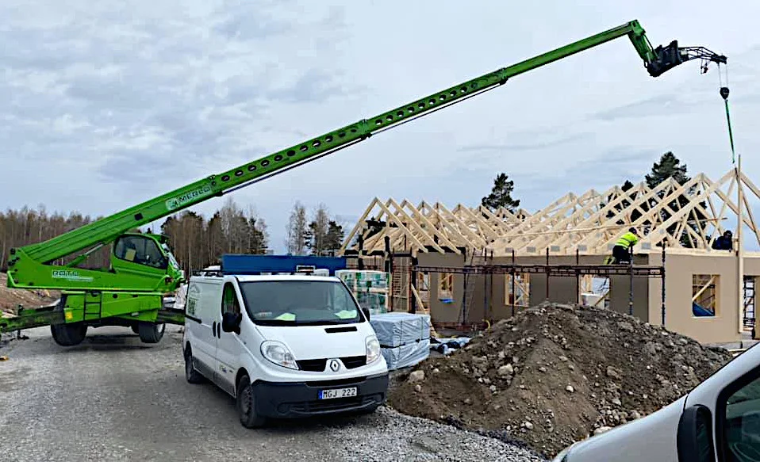

Nybyggnation
Från en första idé till en villa att flytta in i. Vi hjälper dig med planering, bygg och el.

Ett nytt hem, från grunden.
Nyproduktion är en viktig del av vårt arbete. Vi hjälper till från ritning och projektering till en nyckelfärdig villa. Ju tidigare vi kommer in i processen, desto bättre kan vi bidra med lösningar för ditt hus och din tomt.
Vi arbetar med olika hustillverkare, bland annat Fiskarhedenvillan och Hudikhus. Har du redan valt ett hus eller vill du utgå från en egen idé? Vi pratar gärna om hur vi kan hjälpa dig vidare.
Vi håller ihop byggprojektet.
Bygg och el finns inom samma företag. När andra yrkesgrupper behövs samordnar vi arbetet med till exempel VVS-installatörer, plåtslagare, kakelsättare och målare.
Vi tar fram en tidplan som visar i vilken ordning momenten ska utföras och när projektet ska vara klart.
Ritningar som tar idén vidare.
Vi samarbetar med arkitekter som kan hjälpa dig att utveckla din idé eller skiss till ritningar.
Den första ritningen och en ändring ingår när du väljer att bygga med oss. Väljer du att inte gå vidare faktureras ritningarna till självkostnadspris, och du äger dem.
Från stomme till hus.



Vad vill du bygga?
Berätta om din idé, så pratar vi om nästa steg.